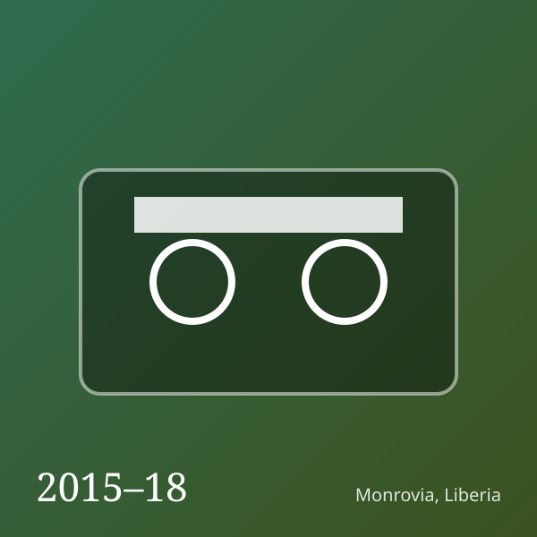

A guitar built from an oil can

Wesseh "Weesay" Freeman lost his sight as a child and taught himself guitar to support his family. He built his own instruments from an oil can, a neck carved with a machete and strings made from bicycle cables. He played the streets of Monrovia for about four dollars a day, until a 2016 video of him playing went around the world.
He died in 2018. The guitar was made from things other people had thrown away, and that is part of why we wanted him here.